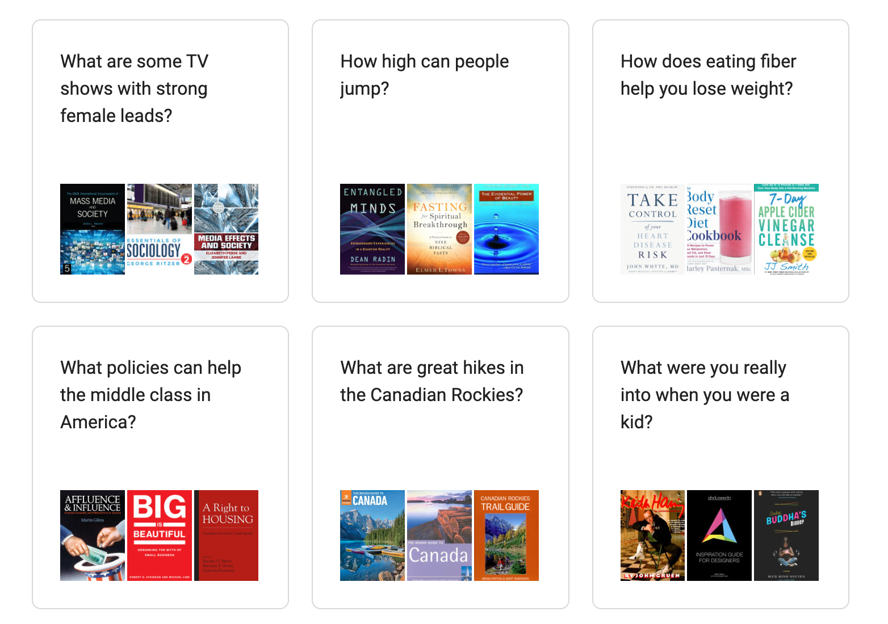

My Adventure with AI Conversation: From Talk to Books to Bard
As someone curious about the rapid advancements in AI, I stumbled on a past tool through Google that was called Talk to Books. Here is a quick description of what it was:
Talk to Books was an experiment in using a neural language model to search through a large collection of books. Launched in 2018, it delighted millions of users who found that you really could converse with books in a way never imagined.
The experiment proved the effectiveness of language models (sometimes called semantic matching or semantic retrieval models), and they went on to drive features inside such products as Google Shopping, Maps, Gmail, Hangouts, and others.
Basically, it would allow users to type in any statement or question and have an AI model scan over 100,000 books to find relevant responses. I imagine it felt like having a virtual librarian at my fingertips
Curious about the technology powering this innovative tool, I dug deeper and discovered that the brains behind Talk to Books was Ray Kurzweil, Google’s Director of Engineering. Kurzweil revealed that the model had been trained on a staggering billion lines of dialogue, enabling it to identify and generate suitable responses to user input.
I was very disappointed to see that is not running anymore but instead of using Talk to Books, I am going to use Bard since it is through the same parent company and apparently, it knows a lot about books.
Enter Bard
Intrigued, I decided to give Bard a chance. I prompted the AI with the following: I wanted to be able to use Talk to Books but it doesn’t run anymore. Talk to Books was an experiment in using a neural language model to search through a large collection of books. Launched in 2018, it delighted millions of users who found that you really could converse with books in a way never imagined.
The experiment proved the effectiveness of language models (sometimes called semantic matching or semantic retrieval models), and they went on to drive features inside such products as Google Shopping, Maps, Gmail, Hangouts, and others.
Basically, it would allow users to type in any statement or question and have an AI model scan over 100,000 books to find relevant responses.
My first question that I would’ve had for Talk to Books is “How to try and have a sober lifestyle in an alcohol-obsessed world”
The first response it provided was differing advice on how to have this type of lifestyle, not a list of books that are relevant to the topic, the list included:
- Be Clear on Your Goals
- Build a Support System
- Develop Alternatives
- Practice Saying No
So I prompted the AI to “compile a list of books that are relevant to the topic”. Talk to Books then scanned its vast library to find relevant books and they answered with:

- The Unexpected Joy of Being Sober by Catherine Gray: This memoir combines personal experience with research to explore the surprising benefits of quitting alcohol.
- Quit Like a Woman: The Radical Choice to Not Drink in a Culture Obsessed with Alcohol by Holly Whitaker: This book takes a feminist approach to sobriety, examining societal pressures around drinking for women and offering alternative paths to fulfillment.
- Sober on a Drunk Planet: Giving Up Alcohol. The Unexpected Shortcut to Finding Happiness, Health and Financial Freedom by Catherine Gray This humorous and relatable guide offers practical strategies for quitting alcohol and building a fulfilling sober life.
- We Are the Luckiest: The Surprising Magic of a Sober Life by Laura McKowen: A memoir that explores the unexpected joys of sobriety and reframes the concept of addiction.
- Twenty-Four Hours a Day: This classic daily meditation guide offers support for those in recovery from alcoholism, providing reflections and prayers for maintaining sobriety.
These books, offering a mix of personal experiences, practical strategies, and reflections on the societal pressures surrounding alcohol, most likely provide valuable insights for anyone seeking to navigate a sober lifestyle in a world that often revolves around drinking.
Of course, this is just a small sampling of the wisdom Talk to Books might have given.
Conclusion: The Future of AI-Powered Book Discovery
Bard, while not a direct replacement for Talk to Books, offers a glimpse into the future of AI-powered book discovery. Its ability to understand context and provide relevant recommendations based on a user’s interests and needs is something that is very promising for the future.
Of course, as with any AI technology, there are limitations and room for improvement. Bard’s initial response to my query about sobriety, while helpful, didn’t quite capture the magic of Talk to Books’ ability to surface relevant books from a wide range. But, for now, i’ll take this as their answers were very insightful.